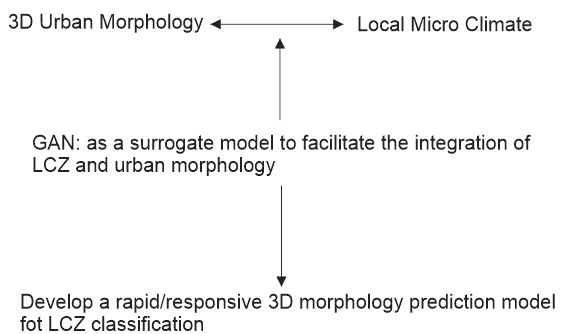

Yilin Wang
Table of Contents
1 – Capstone Project Idea
Urban Morphology Generator responsive to local climate by GAN
Research Question and Research Gap
The realm of computational urban design (CUrbD) is multifaceted, with designs shaped by factors like street block shape, orientation, program, density, and greenery. While micro-climate considerations usually come into play during outcome evaluation, their potential as adaptive factors in initial stages is often overlooked.
Current CUrbD approaches employing GANs, especially models like pix2pix, primarily predict urban texture and imageability, focusing on visual representation due to the 2D limitations of these models. Meanwhile the problem of AI is that it could only generates believable images instead of understanding them, not even to say automate our design process.
This raises the pivotal questions: Can we seamlessly integrate AI into adaptive urban morphology planning grounded in local climate systems? And, is it possible to fully automate this design process, emphasizing adaptive design over mere visual representation? Can we redefine the CUrbD framework by using climate data (GIS images) as initial inputs, allowing urban morphology to dynamically respond to local climate variations?
Computational tools and design methods
Data Collection & Preprocessing: I'm focusing on obtaining meteorological information and city plan images from major cities around the world. The rationale behind this selection is twofold: Diverse Climates: By targeting a range of cities, the dataset will encompass a broad spectrum of climatic conditions, ensuring that the GAN model is trained with comprehensive and diverse information. Urban Complexity: Major cities typically exhibit complex urban structures, which would provide a more challenging and rich dataset. This would test the efficacy of the GAN model in predicting urban morphologies across varied urban layouts.
Machine Learning Models: pix2pix model.By feeding the preprocessed GIS images into this model, the aim is to transform these 2D climate representations into predicted urban layouts that are inherently adaptive to the depicted climates.
Generative Design Integration: After the machine learning phase, Grasshopper will be instrumental in the responsive generation of 3D urban models. This tool will be employed to extract 3D data from the 2D outcomes produced by the GAN, leading to the creation of adaptive urban morphologies that not only visually represent but functionally respond to the local climate conditions.
related precedent1
DeepScope is a platform that allows designers to test multiple urban designs and observe the Image of the City in real time.
Inspired by Kevin Lynch’s The Image of the City and The View from the Road, Deepscope helps designers think about urban imageability: readability, continuity, legibility, image of the city.
method & process:1.With each design iteration, a 3D streetscape model is created; 2.the model is fed into a DCGAN neural network; 3.that generates a realistic street-view visualization.


related precedent2
KPF UI utilized its interactive tool Scout and developed a ‘digital twin’ to help understand how the fictional rust-belt city of Leeside could adapt its built environment to become a climate haven for climate migrants from the coasts of the United States by the year 2040.
method & process: 1.To analyze conditions in Rust Belt cities to create the fictional conditions of Leeside (1mile * 1mile); 2.To look into the physical characteristics of rust- belt city: street grid, building height, lot size etc; 3. To define the parameters that people can control through digital twin by Scout.
Data Exploration and pix2pix algorithm
1.Local Climate mapping data: From World Urban Database and Access Portal Tools (WUDAPT) webite, to download satellite raster data.
2.paired urban morphology(building outline, green, water, street) of LCP maps from Mapbox Streets v7 and combine building heights data from OSM.


The process of responsive generation
After traing pix2pix model, partial 3D models can be constructed in Grasshopper from those generated urban plans.
3D models capable of swiftly responding to alterations in Local climate offered promising potential for applications in further local climate research. In the right image, when local climate map is modified, the changes in generated plans and 3D morphology are also occured.
To sum up, the project proposes a design framework for generating urban 3D morphology that can rapidly responds to local climate changes. Due to the challenges associated with obtaining high-definition remote-sensing images and the limitation of traditional 3D platform in dynamically generating 3D models, the GAN training methods combining local climate data and urban morphology is a innovative way to predict 3D models responsively and rapidly.